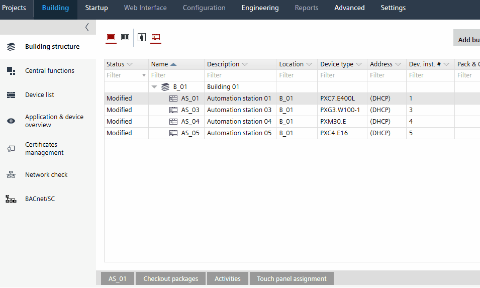

将现有项目中的通知类从 SVS300 升级到 SVS400
对于具有 SVS300 的现有项目，必须手动将通知类更新为 SVS400。原因是 SVS300 不支持 SVS400 的所有新功能。

无法更改以下设备组的通知类别模板：
- 路由器和网关
- DXR1, DXR2, PXC3 devices
- 所有带有 *.A 的设备
通知类

- Go to Building > Building structure.
- Open the Application & device overview task.
- Select a device in the building hierarchy.
Note: Multi-selection of devices is supported. If more than 15 devices are present and the user applies notification class for all, then a progress dialog displays. The messages are shown in the Log tab. - Right-click a device and select Apply notification classes.
- The Apply Notification class dialog box opens.
- Click Yes.
- The defined project notification class is assigned to the device.
Note: If an unsupported device is selected, an error message will be displayed in the Log tab.
Notification class template
用户必须手动更新可报警对象（如事件登记、趋势日志对象）的通知类别编号。还要验证警报路由。